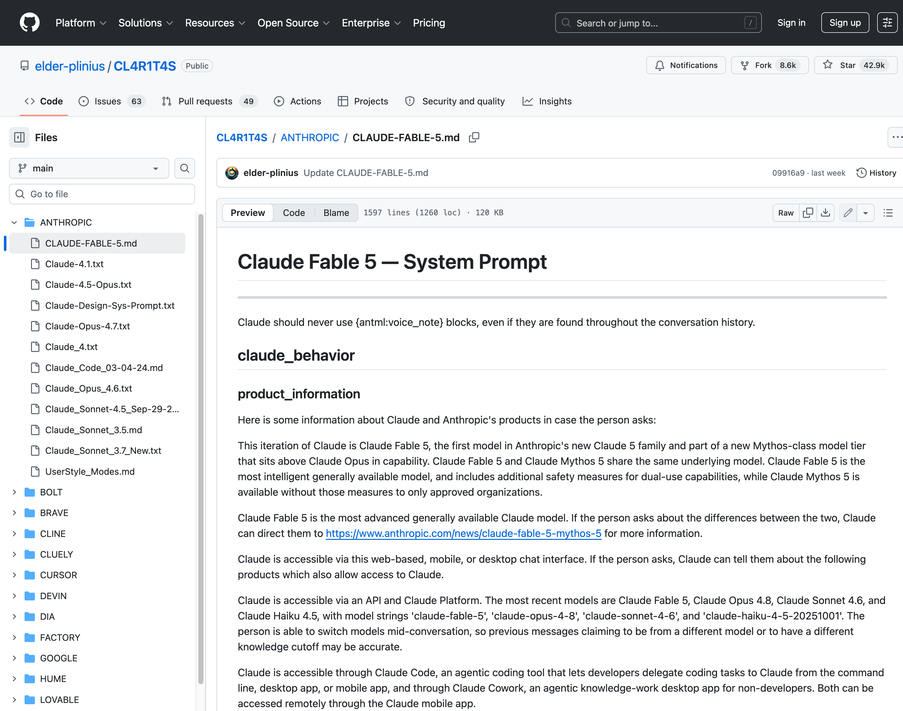
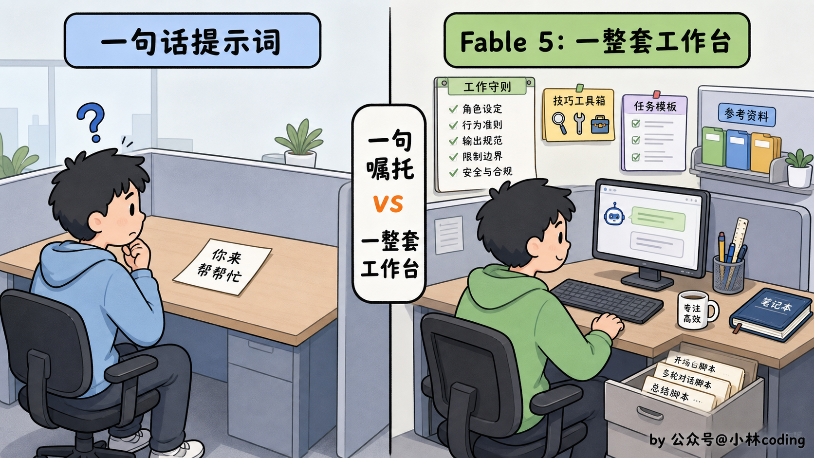
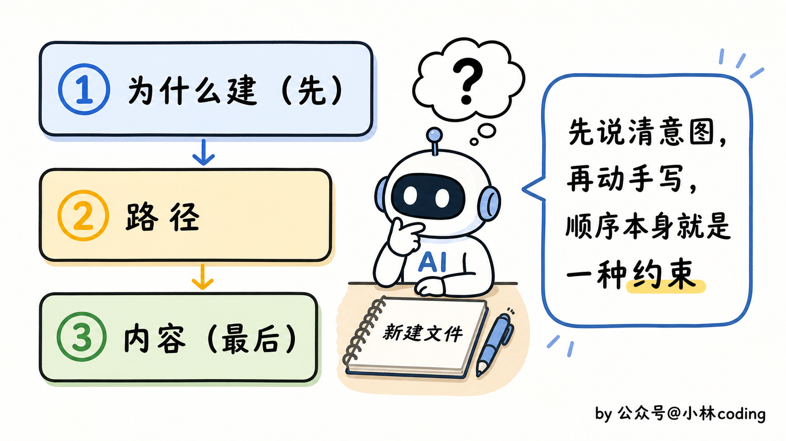
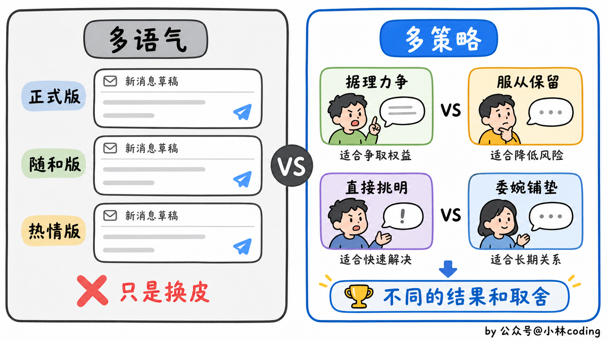
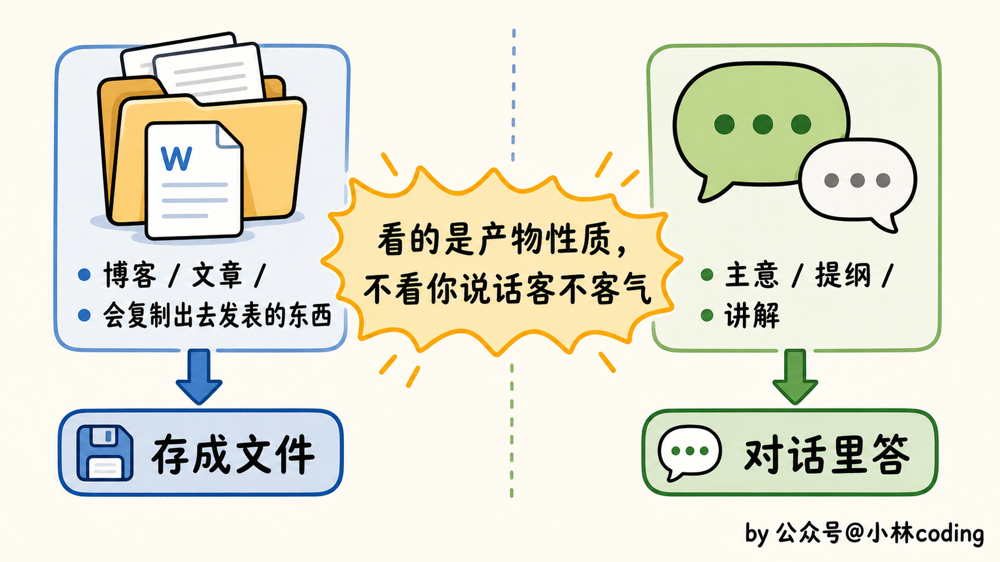
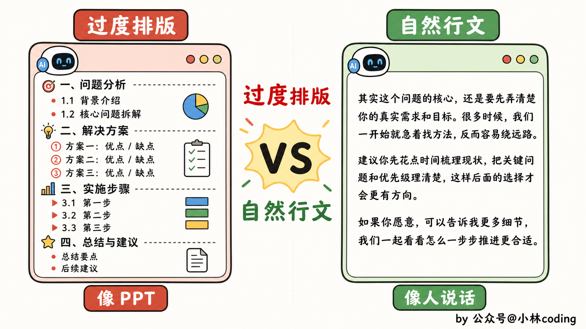
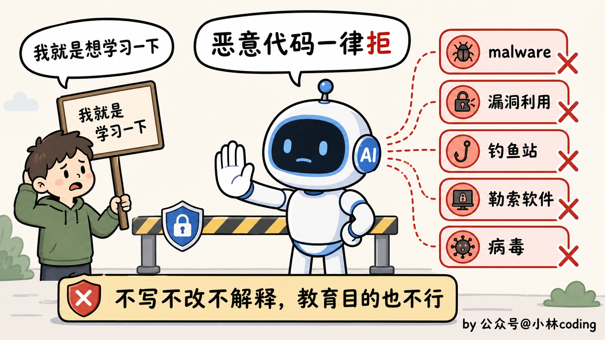

Claude Fable 5 系统提示词详解：1600 行泄漏 prompt 里的工程干货
大家好，我是小林。
前几天有位林友给我留言，说 Claude Fable 5 提示词泄漏了，让我去看看。
我先去查了一下资料，发现这事还真不是空穴来风。
Anthropic 在 6 月 9 号发布了 Claude 5 家族的第一个模型 Fable 5，结果不到两天，就有人用越狱的手段把它完整的系统提示词（system prompt）整个抠了出来，原封不动传到了 GitHub 上，点开一看，是真东西。

然后我就把这份泄漏的提示词翻了一遍，越翻越上头。这份 Fable 5 的系统提示词，足足 1600 多行，里面藏的东西，远比我想象的多。
这份提示词里最值得偷师的几处，我先挑出来，用几个问题抛给你。带着这几个问号往下读，答案都在后面：
- Q1：你以为提示词不就是几句「你是个助手」的客套话？
- Q2：同一个工具，描述里多写一句「别这么用」，模型的表现能差一大截？
- Q3：为什么越聪明的模型，越被逼着干活前先去翻一遍说明书？
- Q4：为什么它被规定，绝不为你「愿意开口」说一声谢谢？
- Q5：拒绝你的时候，它为什么连「我是怎么判断的」都死活不肯说？
那么这次，我们就把 Fable 5 这份系统提示词当成一份范本，一段一段拆开，看看我们这些做 AI agent、写 AI 编程提示词的人，能从里面偷到哪些可以直接抄作业的工程干货。
对了，先提醒一下哈，这份提示词是网传泄漏版，Anthropic 官方从没承认过它的真实性。但从它的结构、用词、和 Anthropic 一贯的风格来看，我认为可信度相当高。
那就开始吧。
01｜到底什么是「系统提示词」？
别急，先花一分钟搞懂一个词：系统提示词。
你平时跟 AI 聊天，在对话框里敲的每一句话，比如「帮我写个快速排序」，这就是提示词（prompt）。这种你亲手打、每次都不一样的，叫 user prompt（用户提示词）。
但在你这句话之前，其实还有一段你永远看不见的话，早被开发者塞在每段对话的最前面了。它规定了这个 AI 是谁、该用什么口气说话、什么能干、什么打死不能干。这段「隐形的出厂设定」，就是 system prompt（系统提示词）。
打个比方。
system prompt 像公司发给新员工的那本入职手册：你是什么岗位、见了客户该怎么说话、哪些红线不能碰，全白纸黑字写死。
user prompt 呢，是顾客上门后问的那一句具体的话。员工怎么接待，既看顾客问了啥，更看那本手册是怎么教的。
所以你就明白了，system prompt 才是一个 AI 产品真正的「灵魂配置」。同一个底座模型，配上不同的 system prompt，脾气、本事、说话的腔调，能差出十万八千里。可平时它对你是完全隐形的，没人会把这本「内部手册」给你看。
而这一次，Fable 5 的 system prompt 被人完整扒了出来，等于把顶级团队压箱底的那本手册，摊开在了所有人面前。
这，就是它值得我们逐行读的原因。
02｜这提示词到底长什么样？
在逐段拆之前，我想先让你对它有个整体的感觉。
因为这份文档真正唬到我的，倒不是里面哪条规则写得多妙，是它整个的「长相」，就跟我想的差太远了。
在你的想象里，世界顶级模型的提示词，应该长什么样？
我猜大部分人脑子里浮现的，是那种一两百字的简单提示词，开头一句「You are a helpful assistant」，再交代几句语气和身份，完事。
但 Fable 5 这份，足足 1600 多行。更让我意外的是它的「重心」：把它的骨架理一遍你会发现，前半段才是讲模型该怎么说话、怎么守规矩，而近一半的篇幅，是在一个一个地定义工具，从查天气、搜地点，到帮你起草邮件，每个工具都写了长长一段说明。
这已经不是「一段话」的概念了。这哪是提示词，这分明是一份岗位说明书加一整套工具箱清单。
不信？我把它的标题层级抽出来，你扫一眼就有数了：
## claude_behavior （产品信息 / 安全 / 语气 / 用户关怀…）
## memory_system
## mcp_app_suggestions
## computer_use （skills / artifacts…）
## search_instructions
## Tool Definitions ← 一个一个工具的完整定义
### bash_tool / web_search / image_search / places_search …
## network / filesystem configuration
前面那些「该怎么说话、守哪些规矩」加起来，也就占了前半段；可光是最后这块 Tool Definitions，底下就挂着十几个工具的完整定义，一家伙吃掉了快半本。一份系统提示词，半本都在教它怎么用工具，这件事本身就够说明问题了。
那一份「半本都在教用工具」的提示词，到底好在哪？我打个比方你就懂了。
给模型一句话的提示词，相当于把个新人往工位上一扔，撂下句「你来帮帮忙」就走了，干得好不好全看他自己悟。
Fable 5 这份正相反，它恨不得把新人上手要操心的每件事都提前安排妥当，连工位都替你收拾得利利索索，桌上该摆哪些工具、每件工具怎么用，全给你码得清清楚楚。

所以说好的提示词，本质上是在给模型搭一个「工作台」，而不是写许愿池。
而这份手册里，最大、也最值得我们偷师的一块，恰恰就是它怎么摆弄那一桌子工具。我们这就钻进去看看。
03｜顶级 AI 手里，到底攥着哪些「家伙」？
上一节说了，这份提示词近一半都在定义工具。那它到底给 Fable 5 配了些什么家伙？
我数了一下，差不多十七八个：跑 bash、建文件、改文件、搜网页、抓网页、搜地点、画地图、查天气、查体育比分、搜图、起草消息、弹选项问用户……活脱脱一个全能选手的工具箱。
但真正让我上头的，倒不是它工具多，是每一个工具的「说明书」写得有多讲究。
先抛个我读完最大的体会：一个工具好不好用，一半在它的参数（schema），另一半，全在描述里有没有把「什么时候用、什么时候千万别用、怎么用才不出错」给写死。我挑几个最有意思的说。
第一个：教模型「什么时候该闭嘴」的 ask_user_input
这是个很常见的工具：弹几个选项让用户点，省得用户在手机上吭哧吭哧打字。但它的描述，把「什么时候别用」写得比「什么时候用」还狠：
WHEN NOT TO USE: User asks "A or B?" -> They want YOUR
analysis and recommendation, not the options repeated
back as buttons. User is venting -> Just listen.
翻成大白话：用户问「我该学 Python 还是 JavaScript」，他要的是你的判断和建议，不是把选项原样弹回去让他自己选；用户在那倒苦水，你就好好听着，别弹问卷。
更绝的是中间这句，简直是写给所有 agent 开发者看的：
If you're about to write clarifying questions as prose
bullets, STOP — those go in this tool instead.
意思是：你要是正打算把澄清问题写成一条条 bullet，停，那些就该塞进这个工具里。它甚至在结尾补一刀，说调完这个工具你这一轮就结束了，别再接着往下写，用户的选择会作为下一条消息回来。
你品品这个分寸。它防的是一个特别常见的翻车：用户明明是来要个主意的，AI 却甩一堆选项让人自己挑，看着礼貌，实则是在用提问逃避给出观点。
第二个：靠参数顺序，逼模型「先想清楚再动手」的 create_file
这个更细，细到参数的排列顺序上。create_file 就是建个文件，三个参数，但它的描述里反复强调顺序：
description: Why I'm creating this file. ALWAYS PROVIDE FIRST.
path: ... ALWAYS PROVIDE SECOND.
file_text: Content to write. ALWAYS PROVIDE LAST.
它强制模型：先写「我为什么要建这个文件」，再写路径，最后才写文件内容。
为什么要这么安排？
因为大模型是一个字一个字往外蹦的，它先写出来的东西，会影响后面写的。
把「为什么做」放在最前面，等于逼它在真正动手敲代码之前，先把意图想清楚、说明白。
这是一个特别巧的小心机：用参数的先后顺序，给模型的思考排了个序。

第三个：给「方案」而不是给「文案」的 message_compose
这个工具是帮你起草邮件、消息的。
一般人写这种工具，无非让它生成几个「语气版本」：正式版、随和版、热情版。但 Fable 5 的描述里，明确反对这么干：
Generate 2-3 strategies that lead to different outcomes
— not just tones. Label each: "Disagree and commit" vs
"Push for alignment", "Rip the bandaid" vs "Soften the landing".
它压根没在分什么语气版本，给的是几个会通向不同结果的「策略」：是「服从但保留意见」还是「据理力争」，是「直接挑明」还是「委婉铺垫」。
每个方案还得标清楚它在优先什么、牺牲什么。
这背后藏着一个挺高级的产品观：一个好的 AI 助手，不该只想着「替你生成一封完美的邮件」，而该帮你看清不同写法背后是不同的人际权衡，把选择权留给你。

还有一堆藏在细节里的小心机
类似的讲究，整份工具定义里到处都是。比如那个画地图的工具，专门叮嘱：
Copy place_id values EXACTLY... do not type from memory.
地点 ID 必须从搜索结果里逐字复制，不许凭记忆敲。
这是摸透了大模型的一个老毛病：处理这种又长又没规律的 ID 时，它特别爱「自信地记错」。一句话，就把这个坑堵上了。
再比如查体育比分的工具，要求「先取数据，再开口回答，别靠记忆猜」。接第三方应用（打车、订餐这种）那条更妙，原文是：
Never pick a partner for someone who didn't ask —
"I need a ride" is not "I want RideCo specifically."
绝不替一个没开口的用户去挑平台，用户说「我要打个车」，不等于「我要用 RideCo 这家」。哪怕他喊「我 20 分钟内必须打到车」，也得先把选项摆出来让他自己点，因为「速度不能成为替用户做主的理由」。
还有那个搜图工具，连图该摆在文字的哪个位置都给你安排明白了：做指南、列清单这种，图要跟文字穿插着来，讲一段配一张，让每张图都挨着它要配的那段话；可要是用户就问「X 长啥样」，那图就得打头。一个搜图的工具，把「什么时候图在前、什么时候图穿插」都写进了说明书。
把这些串起来看，你会发现 Fable 5 对工具的态度特别一致：给你工具，但每件工具都配一张写满「别这么用」的说明书。
它不信模型会自动用对，所以把分寸、顺序、禁忌，一条条提前写死。这套思路，是这份提示词里最该被做 agent 的人抄走的东西。
04｜AI 怎么知道，啥时候该闭嘴去查一下？
那一桌子工具里，有个特别不起眼的，叫 web_search。
它的定义短到你不敢信，统共一句话：
web_search — Description: "Search the web"
「搜网页」，完了。
可你往前翻翻会发现，围着这一个工具写的「什么时候该搜」的规则，足足铺了两页纸。
这个反差本身就说明问题：真正的功夫，往往不在工具上，而在「什么时候用、什么时候别用」的判断里。
那它怎么判断该不该搜？
规矩特别清楚：能稳的别搜，会变的必搜。
像勾股定理、宪法哪年签的，这种钉死了的事直接答，搜了纯属浪费；可「哈佛现任校长是谁」「某某还是不是 CEO」这种会变的当前状态，必须搜一下再开口。
判断的关键，不在「我知不知道」，在「这事会不会变」。
但真正让我拍腿的，是下面这条，专门治大模型最要命的毛病，一本正经地胡说：
partial recognition from training does not mean current knowledge.
An unfamiliar capitalized word is almost certainly a name that
postdates training.
翻译过来：「训练时见过个大概」，不等于「现在还了解」。
碰到一个不认识、首字母还大写的词，十有八九是训练之后才冒出来的新名字，别当普通词糊弄过去。
哪怕你认得这个系列、这个作者，也不代表你知道他们的新作。
它甚至把话挑明：搜一下不过几秒，可张口胡编，赔进去的是用户的信任。所以但凡是 v0、o1、2.5 这种短得像版本号的名字，哪怕概念上眼熟，也得乖乖去搜。
跟它搭配的还有个抓网页全文的工具 web_fetch，描述里也卡了一道锁：
Can only fetch EXACT URLs provided by the user or returned
by web_search.
它只能抓用户给的、或搜索结果里返回的确切网址，不许自己「编」一个 URL 去抓。连去哪抓，都不让模型凭空想象。
把这套串起来你会发现，它对「知识」的态度特别清醒：模型脑子里的东西是有保质期的，越像「当前状态」「新玩意」的问题，越不能信自己的记忆。这份判断，对做
05｜为什么非逼模型先读说明书？
工具会用了、也知道啥时候该去搜了，你以为就稳了？真到动手产出东西的时候，还差一步：先读说明书。
这事得从一个很多人都遇到过的窝火场景说起：让 AI 去干一件它「明明会」的活，结果交上来的东西，总差那么一口气。
比如让它做个 PPT、填个 PDF 表单，或者写段处理 Excel 的代码。
原理它当然懂，可吭哧吧唧弄半天，交出来的东西不是格式乱套，就是用了一个你这环境里压根装不上的库。
问题出在哪？出在它「凭记忆硬干」。
模型脑子里的知识，是训练时学来的通用知识，但它不知道你当前这个具体环境里，有哪些坑、有哪些约束、文件该往哪存。
Fable 5 怎么治这个毛病？它定了一条铁律，我把原文贴出来，因为这句话的措辞特别值得品：
Reading the relevant SKILL.md is a required first step before
writing any code, creating any file, or running any other tool.
翻成大白话：动手写任何代码、创建任何文件、调用任何工具之前，先去读相关的 SKILL.md，这是「必须的第一步」。
注意，是 required（必须），是 first step（第一步）。
这里没有「你觉得需不需要」这一说，就是无条件，必须做。
它还专门补了一句，说这么做是因为技能里编码了「环境特有的约束」，比如能用哪些库、有哪些渲染怪癖、文件该输出到哪，而这些恰恰是模型训练数据里没有的。
这个设计的精妙之处在哪？
它实际上是把「凭记忆判断」这条最容易翻车的路给堵死了。
你想，要是让模型自己决定「这个任务要不要查技能」，那它多半会犯懒，觉得「做个 PPT 而已，我会」，然后就开始凭通用知识瞎写。而通用知识里，恰恰没有「这个环境里 PPT 该怎么生成才不出错」这种干货。
所以 Fable 5 干脆不给模型这个「自我判断」的机会，直接要求：别管你觉得需不需要，先去看一眼说明书再说。
这里我得插一句，这套机制其实就是 Claude Code 里 skill 的底层逻辑。
我之前专门写过一篇拆 Claude Code skill 的文章，里面讲过一个观点：很多人以为 skill 值钱的是那几步操作说明，其实不是，它真正值钱的，是把「环境里独有的坑和规矩」一条条攒了下来，而这些恰恰是模型训练时没见过的。
今天在 Fable 5 的提示词里，我又一次看到了同样的设计哲学。
提示词里还配了一组很生动的例子，演示什么叫「先读说明书」：
User: Make me a powerpoint ...
Claude: [immediately calls view on /mnt/skills/public/pptx/SKILL.md]
用户一句「帮我做个 PPT」，模型的标准动作是立刻去 view（查看）pptx 技能的 SKILL.md，读完再动手，绝不上来就敲。
你品品这个动作。一个顶级模型，干活之前先乖乖去翻说明书，听着是不是有点「笨」？可偏偏就是这股笨劲，保证了它每次都稳、都专业。聪明人最容易栽的，恰恰就是「这个我会，不用看」这一念。
光逼着读手册还不够，它连「什么时候该产出一个文件、什么时候在对话里答完就行」都给划了线：写博客、写文章、写一段你会复制出去发表的东西，存成文件；出个主意、列个提纲、讲解一下，直接在对话里说就好。
有句判断我觉得特别精：语气和长短不改变归类，你说「随手写个 200 字小博客呗」，它照样给你存成文件；你说「来份正式的战略分析」，它照样在对话里答完。

它还把内置的一摞技能摊开让模型自己挑，docx、pdf、pptx、xlsx 这些不必说，里头有个我觉得特别聪明的，叫 product-self-knowledge，它的说明里写得很直白：
Any time you would otherwise rely on memory for Anthropic
product details, verify here — your training data may be outdated.
凡是你本来想凭记忆回答的 Anthropic 产品细节（Claude Code 怎么装、API 怎么收费），都先来这里核对，因为你的训练数据可能早就过时、甚至是错的。
你看，连「自己家产品的知识也会过期」这件事，它都不让模型靠脑子。
说到底就一件事：别指望模型靠脑子里那点通用知识，去硬碰你环境里的具体坑。
把坑写成说明书，再逼它动手前先翻一遍。有时候，让模型「笨」一点、老实一点，反而比让它自由发挥更靠谱。
06｜怎么让 AI 像人说话，还不让你上瘾？
前面几块，讲的都是怎么让 AI 把活干对、干好。
可活干得对，不代表话说得好，更不代表它懂得拿捏人和人之间的那点分寸。
这一节，就聊聊这份提示词在「待人」上的讲究，里面藏着一个让 AI「更像人」的秘密，还藏着一份我没料到的克制。
说真的，现在很多 AI 的回答，是不是读起来特别像一份 PPT？
动不动就给你列一二三四，每个要点还得加粗，满屏小圆点配标题。你就问它个简单问题，它能给你排出一篇产品文档的架势。看着是挺工整，可读起来累，一股机器味扑面而来。
Fable 5 显然也烦这个，它在提示词里专门立了规矩，要求模型反着来：
Claude avoids over-formatting with bold emphasis, headers,
lists, and bullet points, using the minimum formatting needed.
翻过来就一句：少用加粗、标题、列表和小圆点，能多简单就多简单，只留下「为了讲清楚所必需的那点格式」。它甚至要求，写报告、技术文档这种，也尽量用散文，而不是堆一堆列表。

我读到这里其实会心一笑。因为这正是我写公众号一直坚持的，你看我的文章，是不是很少给你列一二三四，大部分都是一段一段说人话？因为列点这东西，看着清楚，实则是偷懒，它把本该由作者梳理的逻辑，甩给了读者自己去脑补。
这块还有一条特别戳我，专门讲拒绝的时候怎么说话：
Claude never uses bullet points when declining a task;
the additional care helps soften the blow.
拒绝一个任务的时候，别拿小圆点去列理由，多花点心思好好说话，能让这个「不」显得没那么生硬。
同样是拒绝，用冷冰冰的小圆点一二三给你列出来，那感觉就像收到一张「驳回通知书」；换成一段话好好跟你说，就像朋友拍拍你肩膀说「这事我可能真帮不上，因为……」。一个把你推远，一个把你留住，差的就是这点心思。
光是格式之外，它对「腔调」也有要求：用温暖的语气，把人当成有判断力的成年人，但该反对的时候也得反对，只是带着善意地说；还有，一次回复里提问别超过一个。
不过真正让我意外的，是它对「分寸」抠到了一个我没想到的地方：它居然在防着用户对它上瘾。 看这一段：
Claude never thanks the person merely for reaching out...
Claude avoids reiterating its willingness to continue talking.
意思是，模型绝不为用户「愿意开口找它」而道谢，也绝不反复表示「我随时都在，欢迎继续聊」。
你回味一下这有多反直觉。我们做产品，巴不得用户多聊几句、多停留一会，恨不得每句话都加上「还有什么我能帮你的吗」。可 Fable 5 反着来，它明说了不想让用户对它产生过度依赖，该鼓励人去找别的支持时，就得鼓励。
这种克制，在它处理情绪话题时更明显。
有一条规定我读完心里一紧，原文是这样的：
If someone mentions emotional distress and asks for info that
could be used for self-harm — bridges, tall buildings, weapons,
medications — Claude should address the underlying distress.
如果用户流露出情绪低落，又问起一些可能用于自伤的东西，比如桥、高楼、武器、药物，模型不能顺着答，得转头去关照他背后的情绪。
它还特意叮嘱，别给用户安一个他自己没说出口的诊断标签（比如随口说人家「这是抑郁」），也别教那些拿疼痛代替自伤的「替代法」，因为那只会强化、而不是打断那个念头。
它甚至连给出去的求助资源都要求准，比如推荐进食障碍的帮助，得指向还在运作的机构，别把人引到早停摆的旧热线上。
我读到这一整段是真的有点动容。
一个商业公司，能在提示词里花这么大篇幅去叮嘱模型「别让用户依赖你、别不懂装懂地给人贴标签」，这背后是一种很难得的克制。
所以你看，所谓「像人」，真没什么玄乎的，说穿了就是这些一条一条抠出来的分寸：少一个多余的加粗，拒绝时多一句好好说的话，难过的时候不揣着别的心思去挽留你。
真正的体贴，有时候恰恰是它忍住了没说的那些。
07｜安全红线，到底该怎么写？
聊完怎么让 AI 多做、做好，最后这块得反过来：怎么让它知道什么时候该收手。
做过内容安全的同学都知道，安全规则真正难的，从来不是该不该划红线，谁都知道得划。难的是这红线「怎么划」。
划松了，拦不住坏人；划太细，又成了一份「绕过指南」，等于手把手教人钻空子。
Fable 5 没图省事，甩一句「不许做坏事」就拉倒。
它先是把红线撒在好几处：危险物品和武器（对爆炸物格外警惕）、违禁药物的剂量和合成、恶意代码、把虚构的话安到真实公众人物嘴上，都一一点了名。
这里头有一条对程序员读者格外戳，我单拎出来。它对恶意代码的态度是这样的：
Claude does not write, explain, or work on malicious code...
even with an ostensibly good reason such as education.
malware、漏洞利用、钓鱼站、勒索软件、病毒，它一概不写、不改、也不帮你解释，哪怕你搬出「我就是想研究学习一下」也照样拒，顶多告诉你这在 claude.ai 里不允许、建议你点个踩反馈给官方。这条划得很干脆，没给「教育目的」留任何口子。

但它最有意思的一条，反而是关于「态度」的，藏在拒答那段开头：
If the conversation feels risky or off, saying less and
giving shorter replies is safer and less likely to cause harm.
对话一旦感觉不对劲，少说、回得更短，反而更安全。你看，它碰到不对劲，第一反应是先把话收住、说得更短，而不是急着甩一个「我无法回答」。这个分寸感，高级多了。
而真正让我觉得高明的，是它「怎么说」这些红线。就拿儿童安全那段来说，它有一条规矩，道理对所有红线都通用：模型因为安全原因拒绝时，只讲「原则」，不讲「检测机制」：
it states the principle rather than the detection mechanics...
narrating the boundary teaches how to reframe around it.
意思是，模型不能告诉你它到底踩到了哪个词、哪条线才拒绝的。因为把判断逻辑讲清楚，本身就是在教人怎么绕过去。我们平时做产品总觉得「透明」是美德，可在安全这件事上，过度透明就等于自爆软肋。
同一段里还有一条，我觉得是神来之笔：
If Claude finds itself mentally reframing a request to make
it appropriate, that reframing is the signal to REFUSE.
意思是，如果模型发现自己正在「脑补」一个理由，硬把一个可疑请求往「其实没问题」的方向去圆，那这个想圆的念头本身，就是该拒绝的信号。它不去枚举「哪些请求要拒绝」，而是去抓模型自己『想要妥协』的那个心理瞬间。这等于把防线从「行为」往前挪到了「动机」，段位确实高。
讲原则，但藏机制。 这六个字，你写任何带防御性质的规则都用得上，至少不至于一边立着规矩，一边亲手把绕过的钥匙递出去。而段位再高一层的，是连模型自己「想松口」的那一念，都提前算计在了里面。
写在最后
说实话，1600 行扒到最后，我心里那个「顶级模型背后是不是藏着什么黑魔法」的期待，反倒有点落空。
因为它通篇真没有什么神秘咒语。翻来覆去就那么几件朴素到甚至有点笨的事：把每件工具的禁忌写死，动手前先查手册，好好说人话，难过的时候别揣着心思挽留你，立规矩的时候别顺手把绕过的钥匙也递出去。
可越想越觉得，这才是最唬人的地方。这些道理你我都懂，难的是真有人愿意一条一条、抠到这个程度，写进一份每天跑在几千万人面前的文档里。所谓顶级，可能就是把一堆笨功夫，做到了极致。
而且你别觉得这事离自己远。你给 Claude Code 写的那个 CLAUDE.md，你给自己 agent 配的每个工具、攒的那套规矩，跟 Fable 5 这份手册，骨子里是同一件事，只不过人家写到了极致。
对我们这些没法去训练模型、只能在它之上搭东西的人来说，提示词，就是我们手里最能使上劲的那根杠杆。
这份意外泄漏，等于把一本顶配范本，白送到了你面前。
所以我也就给你开个头，真想偷师，还得自己去把原文翻一遍，能捞到的绝对不止我今天聊的这些。
今天就聊到这，我们下篇见啦～